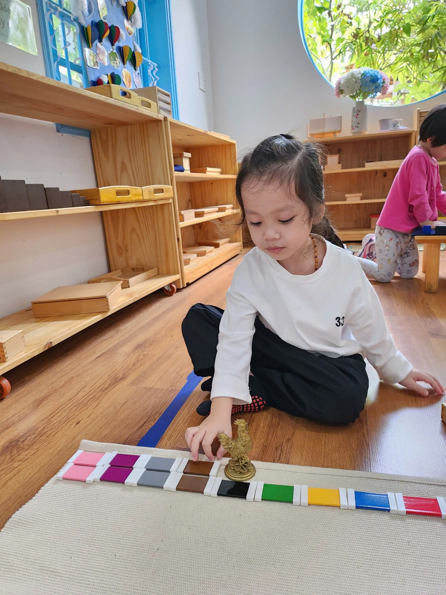

We envision a generation of confident, compassionate, and globally minded individuals who embrace lifelong learning, value diversity, and contribute positively to a better world.

Cocoon Montessori · Da Nang
A place to grow from within.
A 100% English Montessori preschool in Da Nang where children develop independence, confidence, and a lifelong love of learning through hands-on experiences.
2,000m²A campus built for children
60%Outdoor green space
100%English, all day
AMITrained teaching team
BoutiqueA boutique school where every child’s unique talents and potential are recognised, valued, and nurtured
Our philosophy
The child is the architect of their own growth.
We provide high-quality international education in a nurturing, inclusive, and multicultural environment that empowers every child to thrive.

The Montessori approach
Observe first. Prepare carefully. Step back at the right moment.
Authentic Montessori education begins with observation. Our experienced Montessori teachers prepare a carefully designed, hands-on learning environment where children are free to explore, make meaningful choices, develop independence, strengthen critical thinking, and build the confidence needed for success in school and beyond.
Core values
EMBRACE
Seven ways we welcome every child exactly as they are.
EExploration · Explore and learn
MMulticulturalism & Global Citizenship · Multiculturalism and global citizenship
BBelonging / Familiarity · Belonging and being connected
RRespect for Human & Nature · Respect for people and nature
AAdaptability · Flexible adaptation
CCreativity · Innovative thinking
EEverlasting love of learning · An unlimited love for learning
Curriculum
Every stage has its own rhythm.
Three connected environments, each prepared for the child’s developmental needs.
15–30 months
Larva
Our Toddler Program provides a nurturing Montessori environment where children learn through hands-on, self-chosen activities that foster independence, language development, movement, and confidence.
Daily routine being updated30 months–5 years
Caterpillar / Pupa
In our 100% English classrooms, children explore, question, and discover through authentic Montessori experiences, building strong language skills, concentration, creativity, critical thinking, and meaningful social connections.
Daily routine being updated5–6 years
Butterfly
Our Kindergarten Montessori program prepares children for a confident transition to primary school by developing independence, curiosity, resilience, and strong foundations in literacy, mathematics, and social-emotional skills—all within a joyful, 100% English learning environment.
Daily routine being updatedA day at Cocoon
Bare feet on grass. Hands in soil. A new question every day.

Montessori workChildren choose, focus, and surprise even the adults.
OutdoorsGrass, soil, water, and unexpected encounters with nature.
MealsBreakfast, fruit, lunch, and snack designed for nourishment.
AfternoonsArt, music, cooking, and science open up the world.
Facilities
Real spaces for real experiences.

01
Canteen
A child-scaled place for meals and practical-life experiences.

02
Grass playground
Open green space to run, move, and rest beneath the trees.

03
Sandpit
A place to dig, build, and discover through touch.

04
Indoor playhouse
An open wooden structure for movement and imaginative play.

05
Outdoor playhouse
Paths, bridges, and tucked-away corners within nature.

06
Splash area
A refreshing space for sensory exploration and movement.
Time together
Events through the year

Art DayEvery work tells its own story.

Picnic DayFood, nature, and time with friends.

Seasonal festivalsTet, Christmas, and more.

Science DayExperiment, question, and discover together.
Why Cocoon
Built differently, on purpose.

01
A campus built for running, climbing, and growing
Most preschools have a playground. Cocoon has a world. Our 2,000m² Montessori campus features 60% green space with trees, gardens, sand, water, and natural play areas where children can explore, build confidence, develop gross motor skills, and connect with nature every day.

02
Classrooms designed for the child
Everything is within reach, carefully ordered, and inviting independence. The quiet comes from genuine concentration.

03
An AMI-trained Montessori team
Guides who observe before acting, prepare before teaching, and step back when a child is close to discovering the answer.

04
English absorbed, not studied
Our 100% English Montessori program surrounds children with English throughout the day. Through conversation, hands-on learning, stories, music, and play, children naturally develop listening, speaking, and communication skills during the years when language is acquired most easily.

05
Transparent, predictable tuition
Our transparent simple tuition includes no hidden fees and only small differences between age groups. We believe in making high-quality, 100% English Montessori education accessible, predictable, and easy for families to plan.

06
A clear path beyond preschool
Children leave not only ready for primary school, but knowing how to learn: independently, curiously, and confidently.
Real words from our parents
Notes shared by families in the Cocoon community.
1–3 / 16
“We are very pleased with our decision to choose Cocoon as Cap's first school. It has been wonderful to see how happy he is and how much he enjoys going each day.”

“Thank you to all the teachers for giving Gấu such wonderful first-school memories. Gấu and Vivi will miss Cocoon very much.”

“This school year has been a wonderful journey. I learned many new things, made great friends, and created many memories.”

“Mây has always enjoyed being with you. You are a big part of her little world.”

“We're glad to see Louis enjoying activities at the nursery every day. Cocoon is a great nursery!”

“Our family really appreciates all the teachers and the school. You have done a great job with Jiem, and he is developing very well.”

“Thank you Ms Hannah, Ms Julie, Ms Loan and Ms Chanh. Kat has been at Cocoon since she was 14 months old and loves you all.”

“Thank you for the love, guidance and encouragement you have given Bánh Mì this year.”

“Thank you for a wonderful year filled with learning, laughter and friendship. Danny has grown so much and has loved being part of this class.”

“The school activities are very enriching, the teachers are friendly, and Bảo Bảo comes home super adorable.”

“Thank you for filling Phô Mai’s days with laughter, learning and love. She is always excited to come to school.”

“A wonderful year well spent. Thank you, teachers, for your guidance, and thank you, friends, for your love.”

“Mark has achieved excellent results in English, and he is proud and happy to be a Cocoon graduate.”

“We are really happy that our son is surrounded by such lovely people. Thank you for every day filled with activities, patience and endless kindness.”

“Thank you for the beautiful memories, caring teachers, amazing programme, and warm atmosphere you created for our children every day.”

“I really appreciate Cocoon for the care and attention it gives to each child and the way it supports children's all-round development.”

Admissions
Every great journey starts with a visit.
No paperwork. No pressure. Just a chance to see Cocoon during a real school day.

Tour bookings and admissions consultations are open for 2026–2027.Places are limited by class.
Book a tour
Choose a day that works for your family.
Our team will confirm within 24 hours and prepare the right information for your child’s age.
- 0905 366 576
- admin@cocoon.edu.vn
- 78 Truong Chi Cuong, Hai Chau, Da Nang
What to expect
A reassuring, unhurried visit.
Book
Choose a date. We confirm within 24 hours.
Arrive
A warm welcome at the gate, with no paperwork or pressure.
Explore
See classrooms and the garden, meet teachers, ask anything.
Decide
If Cocoon feels right, we guide you through the next step.
Enrolment process
- Book a tourVisit the school and meet the team.
- Receive your packApplication, fee schedule, and document checklist.
- Submit your applicationReturn the completed documents.
- Confirm your placePay the enrolment deposit.
- Welcome to CocoonReceive orientation before the first day.
Common questions
Ask us anything.
Does Cocoon accept mid-year enrolment?
Yes, subject to availability. Contact us and we will check the right class.
Is Cocoon suitable with no prior English exposure?
Absolutely. Children absorb English naturally throughout the day and need no prior experience.
Can we visit on a Saturday?
Yes. Select Saturday in the form and we will confirm a time.
What documents are needed?
Your enrolment pack will list everything, typically including the application, birth certificate, health records, and guardian documents.
Prefer to talk?
We are happy to help.
0905 366 576
admin@cocoon.edu.vn
78 Truong Chi Cuong, Hai Chau, Da Nang